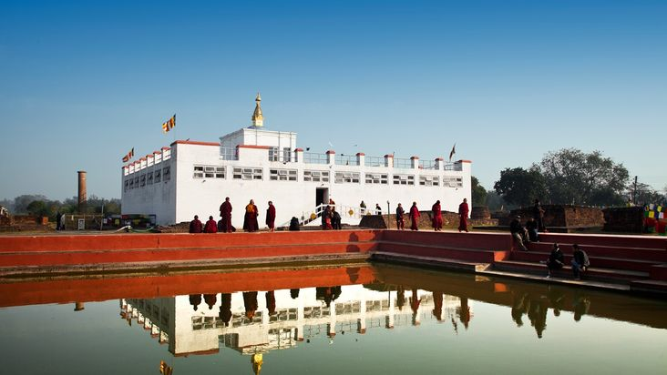

10 World Heritage Sites of Nepal listed in UNESCO
In a country like Nepal, national heritage sites draw a lot of tourists.
UNESCO (United Nations Educational, Scientific and Cultural Organization), whose aim is to preserve and promote these heritages all around the world,
has researched on and selected some of the natural and cultural places of our country and included them in the list of world heritages sites.
These sites are: Kathmandu Durbar Square (Hanuman Dhoka), Bhaktapur Durbar Square, Patan Durbar Square, Pashupatinath Temple, Swayambhunath Stupa, Bouddhanath, Lumbini, Changu Narayan Temple, Chitwan National Park and Sagarmatha National Park.
Besides these there are lots of heritages sites in Nepal.
Here are the world sites in details.
Boudhanath
Boudhanath (Nepali: बौद्धनाथ, also called the Khāsa Caitya, Newari Khāsti, Standard Tibetan Jarung Khashor, Wylie: bya rung kha shor) is a stupa in Kathmandu, Nepal. Located about 11 km (6.8 mi) from the center and northeastern outskirts of Kathmandu, the stupa's massive mandala makes it one of the largest spherical stupas in Nepal.
The Buddhist stupa of Boudhanath dominates the skyline; it is one of the largest stupas in the world.
Swayambhunath
Swayambhunath (Devanagari: स्वयम्भू स्तूप; Nepal Bhasa: स्वयंभू; sometimes Swayambu or Swoyambhu) is an ancient religious architecture atop a hill in the Kathmandu Valley, west of Kathmandu city. The Tibetan name for the site means 'Sublime Trees' (Wylie: Phags.pa Shing.kun), for the many varieties of trees found on the hill. However, Shing.kun may be a corruption of the local Nepal Bhasa name for the complex, Singgu, meaning 'self-sprung'
The complex consists of a stupa, a variety of shrines and temples, some dating back to the Licchavi period. A Tibetan monastery, museum and library are more recent additions. The stupa has Buddha's eyes and eyebrows painted on. Between them, the number one (in Devanagari script) is painted in the fashion of a nose.
Pashupatinath Temple
The Pashupatinath Temple (Nepali: पशुपतिनाथ मन्दिर) is a famous, sacred Hindu temple dedicated to Pashupatinath
and is located on the banks of the Bagmati River 5 kilometres north-east of Kathmandu Valley in the eastern part of Kathmandu,the capital of Nepal.
This temple is considered one of the sacred temples of Hindu faith. The temple serves as the seat of the national deity, Lord Pashupatinath.
This temple complex is on UNESCO World Heritage Sites's list Since 1979. This "extensive Hindu temple precinct" is a "sprawling collection of temples,
ashrams, images and inscriptions raised over the centuries along the banks of the sacred Bagmati river" and is included as one of the seven monument groups in UNESCO's designation of Kathmandu Valley as a cultural heritage site.
One of the major Festivals of the temple is Maha Shivaratri on which day over 800,000 devotees visit here.[5]
The twelve Jyotirlinga (in India) are the body and the Jyotirlinga at Pashupatinath in Kathmandu (Nepal) is the head over this body.
Changu Narayan Temple
The ancient Hindu temple of Changu Narayan, is located on a high hilltop that is also known as Changu or Dolagiri.
The temple was surrounded by champak tree forest and a small village known as Changu.
The temple is located in Changunarayan VDC of Bhaktapur District, Nepal.
This hill is about 7 miles or 12 km east of Kathmandu and a few miles north of Bhaktapur.
The Manahara River flows beside the hill. This shrine is dedicated to Lord Visnu and held in special reverence by the Hindu people.
This temple is considered to be the oldest temple in the history of Nepal.
The Kashmiri king gave his daughter, Champak, in marriage to the prince of Bhaktapur.
Changu Narayan Temple is named after her.
Lumbini

Lumbinī (Nepali and Sanskrit: लुम्बिनी , "the lovely") is a Buddhist pilgrimage site in the Rupandehi District of Nepal.
It is the place where, according to Buddhist tradition, Queen Mayadevi gave birth to Siddhartha Gautama in 563 BCE.
Gautama, who achieved Enlightenment some time around 528 BCE, became the Buddha and founded Buddhism.
Lumbini is one of many magnets for pilgrimage that sprang up in places pivotal to the life of the Buddha.
Lumbini has a number of temples, including the Mayadevi Temple and several others which are still under repair. Many monuments, monasteries and a museum, the Lumbini International Research Institute, are also within the holy site.
Also there is the Puskarini, or Holy Pond, where the Buddha's mother took the ritual dip prior to his birth and where he had his first bath.
At other sites near Lumbini, earlier Buddhas were, according to tradition, born, then achieved ultimate Enlightenment and finally relinquished their earthly forms.
Lumbini was made a World Heritage Site status by UNESCO in 1997.
Chitwan National Park

Chitwan National Park (Nepali: चितवन राष्ट्रिय निकुञ्ज; formerly Royal Chitwan National Park) is the first national park in Nepal.
It was established in 1973 and granted the status of a World Heritage Site in 1984.
It covers an area of 932 km2 (360 sq mi) and is located in the subtropical Inner Terai lowlands of south-central Nepal in the districts of Nawalparasi, Parsa, Chitwan and Makwanpur.
In altitude it ranges from about 100 m (330 ft) in the river valleys to 815 m (2,674 ft) in the Churia Hills.
In the north and west of the protected area the Narayani-Rapti river system forms a natural boundary to human settlements.
Adjacent to the east of Chitwan National Park is Parsa National Park, contiguous in the south is the Indian Tiger Reserve Valmiki National Park.
The coherent protected area of 2,075 km2 (801 sq mi) represents the Tiger Conservation Unit (TCU) Chitwan-Parsa-Valmiki, which covers a 3,549 km2 (1,370 sq mi) huge block of alluvial grasslands and subtropical moist deciduous forests.
Sagarmatha National Park
The Sagarmāthā National Park (sagaramāthā rāṣṭriya nikuñja) is a protected area in the Himalayas of eastern Nepal that is dominated by Mount Everest.
It encompasses an area of 1,148 km2 (443 sq mi) in the Solukhumbu District and ranges in elevation from 2,845 to 8,848 m (9,334 to 29,029 ft) at the summit of Mount Everest.
In the north, it shares the international border with the Qomolangma National Nature Preserve of Tibet Autonomous Region and extends to the Dudh Kosi river in the south.
Adjacent to the east is the Makalu Barun National Park.
Sagarmāthā is a Nepali word derived from सगर् sagar meaning "sky" and माथा māthā meaning "head".
The protected area has been identified as an Important Bird Area by BirdLife International and is included in the Sacred Himalayan Landscape.
Kathmandu Durbar Square

Kathmandu Durbar Square (Basantapur Darbar Kshetra) in front of the old royal palace of the former Kathmandu Kingdom
is one of three Durbar (royal palace) Squares in the Kathmandu Valley in Nepal, all of which are UNESCO World Heritage Sites.
Several buildings in the Square collapsed due to a major earthquake on 25 April 2015. Durbar Square was surrounded with spectacular
architecture and vividly showcases the skills of the Newar artists and craftsmen over several centuries. The Royal Palace was
originally at Dattaraya square and was later moved to the Durbar square.
The Kathmandu Durbar Square held the palaces of the Malla and Shah kings who ruled over the city.
Along with these palaces, the square surrounds quadrangles, revealing courtyards and temples. It is known as Hanuman Dhoka Durbar Square,
a name derived from a statue of Hanuman, the monkey devotee of Lord Ram, at the entrance of the palace.
Bhaktapur Durbar Square
Bhaktapur Durbar Square is the plaza in front of the royal palace of the old Bhaktapur Kingdom, 1400m above sea level.
Many tourists attraction is toward the pachpann jhyale durbar
The Bhaktapur Durbar Square is located in the current town of Bhaktapur, also known as Bhadgaon,[1] which lies 13 km east of Kathmandu.
While the complex consists of at least four distinct squares (Durbar Square, Taumadhi Square, Dattatreya Square and Pottery Square),
the whole area is informally known as the Bhaktapur Durbar Square and is a highly visited site in the Kathmandu Valley.
The Palace of Fifty-five Windows (Pachpanna Jhyale Durbar) was built during the reign of the Malla King Bhupatindra Malla
who ruled from 1696 to 1722 AD and was not complete untill 1754 AD during the reign of his son Ranjit Malla.
Patan Durbar Square
Patan Durbar Square is situated at the centre of the city of Lalitpur in Nepal. It is one of the three Durbar Squares in the Kathmandu Valley,
all of which are UNESCO World Heritage Sites. One of its attraction is the ancient royal palace where the Malla Kings of Lalitpur resided.
The Durbar Square is a marvel of Newar architecture. The Square floor is tiled with red bricks.[1] There are many temples and idols in the area. The main temples are aligned opposite of the western face of the palace.
The entrance of the temples faces east, towards the palace. There is also a bell situated in the alignment beside the main temples.
The Square also holds old Newari residential houses.
There are various other temples and structures in and around Patan Durbar Square built by the Newa People.
The square was heavily damaged on 25 April 2015 baisakh 12 by a major earthquake.